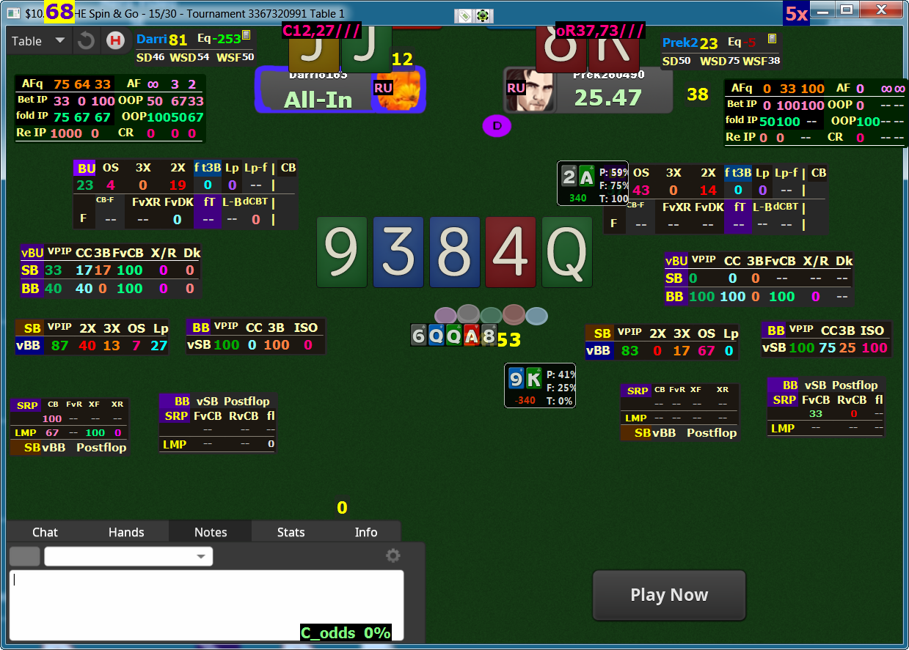

Homo ludens
"Человек играющий" или немного обо мне.
Всегда любил играть.
Занимался разными игровыми видами спорта:
- теннисом
- волейболом
- гандболом.
Когда выяснилось, что здоровье не позволяет играть в активные физические игры
по-настоящему, увлёкся шахматами и карточным играми.
Среди карточных игр особенно привлекли внимание (по времени знакомства с правилами):
- кинг;
- преферанс;
- бридж;
- покер.

Так сложилось, что покер вышел за рамки простого увлечения и несколько лет являлся единственным источником дохода
для моей семьи.
Я даже сотрудничал с одним из покерных интернет-ресурсов. Например, вот одна из моих давних статей о покере.
Однако
сейчас зарабатывать игрой в покер стало намного тяжелее. Связано это с тремя основными факторами:
- средний уровень оппонентов значительно вырос, поэтому обыгрывать их намного сложнее;
- успешная игра в покер невозможна без напряжённой многочасовой работы с различным покерным "софтом" во
внеигровое время;
- "окно возможностей" для игроков из России в последнее время значительно сузилось (особенно - после 24-го
февраля).
Причём и непосредственно во время игры в покер необходимо обрабатывать (и быстро!) массу статистической информации.
Вот как выглядит
покерный стол для онлайн-игры при использовании далеко не самой сложного приложения,
отображающего основную статистику действий оппонентов:

Всё вышеперечисленное подтолкнуло меня попытаться диверсифицировать источники своих доходов
и освоить с этой целью одну из IT-специальностей.
Чем я сейчас и пытаюсь заниматься (с очень скромными результатами).